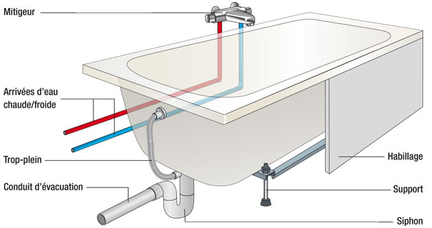

En effet les bains sont fait de plusieurs matériaux comme : La fonte : Elle permet de garder la chaleur du bain, elle rend aussi la baignoire durable et résistante et facile à entretenir L'émail (comme revêtement) : Il permet de crée ce coté lisse du bain l'acier : Il permet d'avoir un baignoires solide et robuste tout en étant malléable pour avoir un plus grand choix ... la fonte avec un revêtement d’émail : Cette baignoire en fonte est facile à entretenir, résistante et parvient à maintenir l'eau à une bonne température. La baignoire en émail est en général blanche. Des professionnels du sanitaire proposent aussi la baignoire en acier la plupart du temps émaillée. L’acier est robuste tout en restant malléable permettant un grand choix de formes. Cette baignoire est non seulement facile à entretenir, mais également bon marché. Il faut aussi savoir qu’elle peut s’avérer légèrement glissante. oups ... Le bois : En vogue en ce moment auprès des amoureux du design et de la Zen attitude, la baignoire en bois offre des possibilités infinies étant fabriquée sur mesure par des artisans. Cette baignoire assure un contact doux et chaud tout en restant parfaitement hermétique. Restez attentif au choix du bois et n’oubliez pas de l’entretenir et de ventiler fréquemment la salle de bains.
Dans la chaine de production il y a tout d'abord la conception: Les designers créent des modèles de baignoires en utilisant des logiciels de design. Ils prennent en compte l'ergonomie, l'esthétique et les fonctionnalités. Puis une fois le design validé il y a le moulage: un moule est fabriqué à l'aide de matériaux courants comme l'acrylique, la fonte ou enfin l'acier. Par exemple l'acrylique est chauffé pour devenir malléable, puis placé sur le moule pour prendre sa forme. Après il y a l'étape du renforcement: Pour les baignoires en acrylique, une couche de fibre de verre est ajoutée à l'extérieur pour renforcer la structure. Ensuite il y a les finitions : Les baignoires en fonte sont recouvertes d'émail et cuites à haute température pour obtenir une surface lisse et durable. Les baignoires en acrylique sont polies et inspectées pour s'assurer qu'il n'y a pas de défauts. On procèdent après à l'assemblage des accessoires: Les trous pour les robinets et autres accessoires sont percés, et les éléments comme les pieds de la baignoire sont fixés. Enfin les baignoires passent sous un contrôle de qualité: Chaque baignoire est inspectée pour vérifier qu'elle répond aux normes de qualité avant d'être emballée et expédiée.